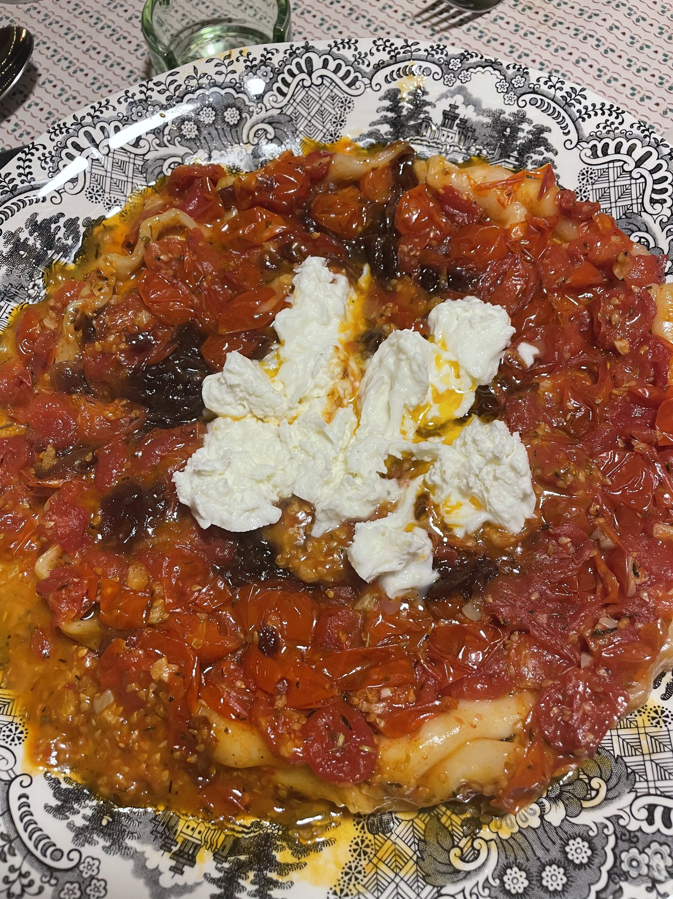

Tarta tatin de tomates cherrys y burrata
Ingredientes
4×
- 400 g de tomates cherry
- aceite de oliva
- sal
- 1 cdta de azúcar
- 1 lámina de hojaldre
- 1 burrata

Preparación
Paso 1
Repartir 400 g de tomates cherry en un molde con un poco de aceite de oliva, sal y 1 cdta de azúcar.
Paso 2
Cubrir con 1 lámina de hojaldre metiendo los bordes hacia dentro.
Paso 3
Hornear 30min a 200ºC, dejar reposar 5min y darle la vuelta sobre un plato.
Paso 4
Servir con 1 burrata desmenuzada por encima.
Resumen
400 g de tomates cherry
aceite de oliva
sal
1 cdta de azúcar
Repartir
1 lámina de hojaldre
1 burrata
Hornear 200ºC darle la vuelta